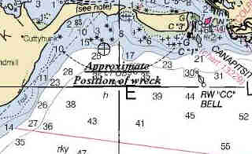

Link Index
MWDC
Home Page
Shipwrecks Page
Albert Galatin
Alice M. Colburn
Alice M. Lawrence
Ardandhu
Barge and Crane
California
Charles S. Haight
Chelsea
Chester Poling
City of Salisbury
Corvan
Dixie Sword
Edward Rich
French Van Gilder
Henry Endicott
Herbert
Herman Winter
Hilda Garston
HMCS St. Francis
James Longstreet
John Dwight
Kershaw
Kiowa
Lackawanna
Lunet
Mars
Pemberton
Pendleton
Pinthis
Port Hunter
Pottstown
Romance
Seaconnet
Trojan
USS Grouse
USS Yankee
USS YSD
Vineyard Sound
Lightship
|
Description: Tug, iron hull
Dimensions:
length - 137 ft.
width - 26 ft.
depth - 9 ft. 6 inches
Tonnage:
gross -
other - displacement - 450.
Propulsion: Steam, propeller
Machinery:
Cargo:
The Shipwreck
Date Sunk: March 15, 1891
Cause: Grounded
Location: Cuttyhunk Island
Coordinates:
Latitude, 41o - 25.2'N
Longitude,70o - 55.1'W
Loran:
Early Sunday morning, March 15, the Government salvage tug Triana was entering Vineyard Sound enroute to Tarpaulin Cove, Naushon Island. At approximately 2AM Triana's Captain mistook a white light burning on the southern shore of Cuttyhunk Island, for the light marking Tarpaulin Cove. Turning toward what was thought to be a safe anchorage, the tug soon found itself atop Schooner Ledge near Canapitset Channel.
Captain Bosworth of the Cuttyhunk Lifesaving Station attributed the incident to a lack of Red Coston Signals, the flares employed by lifesavers to warn ships of danger. The day of Triana's loss the Cuttyhunk Station had only one remaining, which was in the possession of the patrol on the more dangerous west coast of the Island. "The patrol on the beach where Triana struck had only a white lantern", Capt Bosworth later stated. "When he saw the approach of the Triana the only thing he could do was wave it. Its flashing light was mistaken for the friendly light of Tarpaulin Cove and lured the tug on."
Triana lay broadside on the ledge with the tide ebbing and flowing through holes in it's hull. The tug's bow had settled over the ledge and seas generated from a strong southwest wind played havoc across Triana's decks. Eventually the bridge superstructure broke up and washed ashore.
Triana was responding to the aid of the USS Galena and Government tug Nina, which had gone ashore off Gay Head, Martha's Vineyard, on March 12. In time both vessels were removed, but Triana was abandoned to the elements.
Back to Top
Dive Site Conditions
Depth in feet:
maximum - ;
minimum -
Visibility in feet:
average -
The May/June, 1978 edition of Norlantis magazine reported that the Triana was within snorkeling distance of shore.
Click on the image to go to the MapTech Map Server,
for additional navigation information.

Back to Top
Historical Background
Constructed:
year - 1865
where - New York, New York
builder - William Perrine
Construction details:
Crew:
Master:
Owners: United States Navy
Home or Hailing Port: Newport, Rhode Island
Former Name(s), date(s):
Official number:
Country: U.S.A.
Other Comments:It is believed that the tug was named after the lookout aboard the Columbus expedition vessel Pinta, who on October 12, 1492, first sighted the Americas.
When the Nina and Triana ran aground, 1/6 of the Government's tugging force was reported lost.
Back to Top
Salvage
March 18 - the Revenue Cutter Samuel Dexter removed the "Wreckers' Apparatus", boats and hawsers.
Back to Top
Sources:
Dictionary of American Naval Fighting Ships, Vol. VII; Navy Dept.
MapTech Mapserver
New York Maritime Register, March 18, 1891
New York Times, March 16-19, 21, 30, 1891
Norlantis, May/June 1978
Back to Top
These files are under construction. Any information, specifically dive site related, would be greatfully appreciated.
Send comments to: Chris Hugo
Copyright © 2000 by Christopher C. Hugo
Massachusetts Board of Underwater Archaeological Resources
All Rights Reserved
|